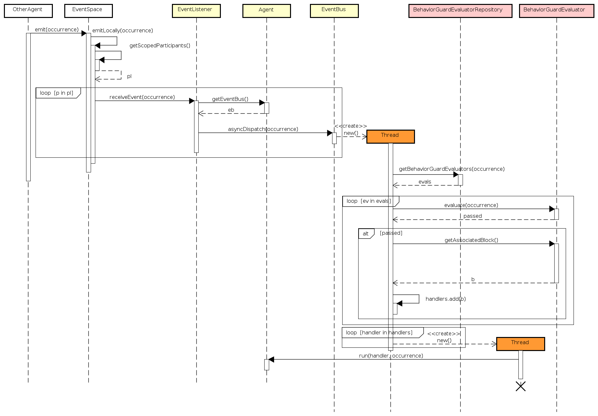
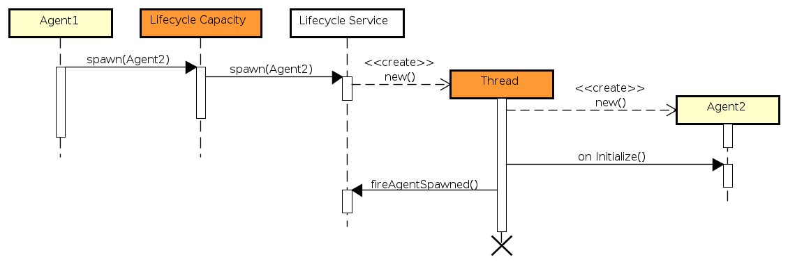

Run-time Behavior of SARL Programs
- 1. Definition: SARL Run-time Environment (SRE)
- 2. Sequential vs. Parallel Execution
- 3. General Principles Related to the Parallel Execution within Agents
- 4. Event Handling Run-time Sequence
- 5. Code Synchronization in SARL
- 6. Event Sending Run-time Sequence
- 7. Agent Spawning Run-time Sequence
- 8. Agent Killing Run-time Sequence
- 9. Legal Notice
This page provides the key elements for understanding the operational semantic of the SARL programs.
1. Definition: SARL Run-time Environment (SRE)
The SARL Run-time Environment (SRE) is part of the SARL toolchain. An SRE is a collection of tools that enables the run of an agent-based application written with SARL. Such an SRE must implement each service and feature that are assumed to be provided by the run-time environment for running a SARL program.

When the target platform is Java-based, the SRE is composed by a standard Java Runtime Environment (JRE), and the Janus Java library, which provides the base classes for running agents written with SARL. In this latest example, a command-line tool is provided for launching the Janus platform: janus.
2. Sequential vs. Parallel Execution
Except for the cases that are explained on this page, all the instructions and statements of a SARL program are run sequentially,
as for most of the other programming languages such as Java.
Consequently, the expressions such as while, if, switch, run sequentially. There should be no difference with
your knowledge in procedural programming or object-oriented programming.
The elements that are run asynchronously, i.e. in parallel are explained in the rest of this page.
3. General Principles Related to the Parallel Execution within Agents
Let an agent entry point be a part of the agent behavior that is reacting to a stimulus from the outside of the agent.
In SARL, the entry points are by default the behavior event handlers, a.k.a. behavior units, specified with the on keyword,
as illustrated below:
agent AgentExample {
on MyEvent {
// Do something
}
on MyEvent {
// Do another thing
}
}
To implement bio-inspired behaviors, agents may react in parallel to multiple external stimuli. SARL encourages a massively parallel execution of agents and behaviors by associating each of these entry points to a separate execution resource, a.k.a. thread.
Parallel execution of the pro-active behaviors of an agent is supported by the tasks that are launched with the Schedules built-in capacity.
In most of the agent frameworks, e.g. Jade and Janus (before its adaptation to SARL), each agent runs on a separate thread. This design choice enables each agent managing its own execution resource, and participating to its autonomy. On several other platforms, e.g. TinyMAS, the agents are executed in turn in a loop. The parallel execution of the agents is therefore simulated.
Whatever the agent execution mechanism that is implemented within the SRE (thread-based or loop-based), a SARL developer always assumes that the agent’s entry points are executed in parallel when she/he is writing the event handlers.
4. Event Handling Run-time Sequence
According to the general principles of parallel execution that are explained into the previous section, each time an event is received by an agent, this event must be treated in a parallel process. The rest of this section describes the run-time behavior that is applied when handling the events within a SARL program.
4.1. Event Handling in Agent
In order to illustrate the run-time behavior of a SARL agent when handling an event, two illustrative examples are explained as well as the implemented general algorithm.
Single Event Handler
Let consider the following agent definition:
agent Agent1 {
on MyEvent {
println("A")
}
on MyEvent2 {
}
}
event MyEvent
event MyEvent2
This agent definition contains two event handlers: one for events of type MyEvent, and one for events of type MyEvent2.
The sequence diagram that corresponds to the sending and receiving of an occurrence of type MyEvent by Agent1 is provided below.
The different steps of the process are (please note that this process is not the really implemented into the SRE; See below for the implemented general process):
- An agent (that may be the
Agent1or not) emits an event of typeMyEventby calling anemit()function within an event space (this part of the API is not detailed in this section). - The event space retrieves all the participants (either marked as strong or weak) and loop on each of them (named
p). Each participant is an object of typeEventListener. - For each participant, the event delivering function
receiveEvent()is invoked:- The event listener retrieves the event bus of
Agent1. The event bus is an internal object that is in charge of routing the events to the different objects that were registered as waiting events within the agent (at least the agent itself). - The event is dispatched asynchronously by the event bus.
- Because there is only one event handler for events of type
MyEvent, only one thread is created for running the associated block of code. - The thread is in charge of running the block of code on the current event occurrence.
- Because there is only one event handler for events of type
- The event listener retrieves the event bus of
Double Event Handlers
It is also possible to define multiple event handlers into an agent definition, as illustrated by the following SARL code:
agent Agent2 {
on MyEvent {
println("A")
}
on MyEvent {
println("B")
}
on MyEvent2 {
}
}
This agent definition contains three event handlers: two for events of type MyEvent, and one for events of type MyEvent2.
The sequence diagram that corresponds to the receiving of an occurrence of type MyEvent by Agent2 is provided below:
The process is similar to the process that is described above for the single event handler example.
The difference is related to the number of threads that are created: one for each event handler defined into Agent2.
Inheritance of Event Handlers
When the agent definition extends another agent definition, as illustrated by the following SARL code, the event handlers are inherited.
agent SubAgent2 extends Agent2 {
on MyEvent {
println("C")
}
on MyEvent {
println("D")
}
}
In the previous code, two event handlers are added into the definition of SubAgent2.
These two event handlers are added to the list of available event handlers for the event MyEvent.
Therefore, the agent SubAgent2 displays A and B from the inherited definition of Agent2, and C
and D from the SubAgent2 definition.
And, because of the parallel execution of the four event handlers, there is no fixed order for displaying A, B, C, D.
Caution Event handlers are inherited, but there is no overriding of event handler. In other words, you cannot replace/override the code of an event handler that is inherited.
General Process for Event Handling
Finally, the general process for event handling must supports any number of event handlers. Additionally, it is possible to specify a guard for each event handler. This guard is evaluated when the occurrence of the event is received in order to determine if the associated block of code should be executed, or not. The sequence diagram bellow illustrates the algorithm for general event handling into the agents.

It is similar to the two examples that are presented above.
It is interesting to note that the function asyncDispatch() of the event bus is run asynchronously, i.e. in a separate thread.
In this way, the agent that is sending the event is not blocked by the event dispatching process.
Let n be the number of participants within an event space, and m be the average number of event handlers per participant. The number of threads that is created by the SRE is: n * (1 + m)
4.2. Event Handling in Behavior
A Behavior is the specification of a collection of behavior units (or event handlers). An agent may create and register multiple behaviors that should be used/executed in parallel to the agent itself. The question arising is: how the registered behaviors are receiving the events’ occurrences?
Since a behavior must be registered as explained in the Behaviors built-in capacity, the agent is managing internally a collection of behaviors.
In the sequence diagram below, you could see that a behavior is created and then registered through the Behaviors built-in capacity. The skill implementing the capacity is registering the created behavior as a event listener on the agent’s event bus.
5. Code Synchronization in SARL
5.1. Why Synchronization?
Let’s consider a typical race condition where we calculate the sum, and multiple event handlers (i.e. threads) execute the
Calculate event:
agent AgentExample {
var sum = 0
def getSum : int {
this.sum
}
def setSum(v : int) {
this.sum = v
}
on Calculate {
setSum(getSum + 1)
}
}
Since the event handler is executed in parallel (see previous section), if multiple occurrences of Calculate are fired, then a multi-threading issues
for accessing to the sum may occur.
Let the firing of 1000 events. If we would execute this serially, the expected output would be 1000, but our multi-threaded
execution fails almost every time with an inconsistent actual output e.g.: 965. This result is of course unexpected.
A simple way to avoid the race condition is to make the operation thread-safe by using the synchronized keyword.
Caution If a field is assessed from a function called from an event handler, then the synchronization issue still may occur, if neither the function is synchronized nor the event handler.
5.2. The Synchronized Keyword
The synchronized keyword is included into the SARL language in order to let you control how your program is synchronizing the
accesses to shared data.
This keyword is formally defined in a dedicated reference page.
Caution The SARL compiler does not apply automatic synchronization to your code yet (it is planned for a future release). You have to manage the synchronized keyword manually by yourself.
6. Event Sending Run-time Sequence
One of the key features of a SARL program is related to the exchange of events. In the previous sections, we have discussed the run-time behavior when receiving of the events. Regarding the sending of the events, SARL provides built-in capacities that assume the sending is done asynchronously. In other words, as soon as an agent is invoking the event sending function, the SRE starts a task in parallel for delivering the event.
In the sequence diagram of the general event dispatching process, above, you could see that the call to the emit() function is
limit to the strictly necessary code for initiating the event dispatching into all the participants of an event space.
Therefore, a thread is creating as soon as possible for proceeding the concrete dispatching.
7. Agent Spawning Run-time Sequence
Agent spawning is the action for creating instances of agents into the SRE.
The spawning is supported by the Lifecycle built-in capacity that provides a collection of spawn functions.
The sequence diagram below illustrates the standard agent spawning process.

It is important to note that the initial spawn() function returns quickly, and most of the time, before the agent is really created and
added into the SRE.
It is due to the thread that is created by the SRE’s life-cycle service for supporting the agent creation and initialization process.
You have also to note that the initialization event handler, i.e. on Initialize, into the created agent is executed synchronously.
In this way, it is sure the new agent is totally initialized when the AgentSpawned events are fired for notifying the other agents about
the agent creation.
8. Agent Killing Run-time Sequence
Agent killing is the action that initiated by an agent for committing a suicide.
This action is supported by the Lifecycle built-in capacity that the killMe function.
The sequence diagram below illustrates the standard agent killing process.
Because the killMe function never returns from its call, it is not necessary to created a separate thread for not-blocking the killMe
caller. That’s why in the sequence diagram above, there is no creation of a thread.
9. Legal Notice
- Specification: SARL General-purpose Agent-Oriented Programming Language (“Specification”)
- Version: 0.12
- Status: Draft Release
- Release: 2021-01-13
Copyright © 2014-2021 the original authors or authors.
Licensed under the Apache License, Version 2.0; you may not use this file except in compliance with the License. You may obtain a copy of the License.
You are free to reproduce the content of this page on copyleft websites such as Wikipedia.
Generated with the translator io.sarl.maven.docs.generator 0.12.0-SNAPSHOT.